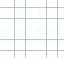
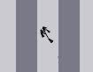
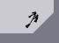
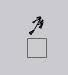

Ok, there have been a lot of duplicate topics about topics that have been discussed millions of times before and are in the FAQs, etc. So please don't post additional topics and read this instead!
Brief FAQ
 How come I have to click my mouse in order for something to happen?
How come I have to click my mouse in order for something to happen?
You have frame-by-frame mode on. Make sure your caps lock is on to play in normal mode
N is running slower than usual. Is there any way I can boost performance?
Yes. There may be background programs running that are using up memory. Close those. You can also change the priority of N. Go to task manager > n_v14.exe > right-click > Set Priority > High (or above-normal). Also check the system requirements to make sure your computer is able to run N v1.4 smoothly.
System Requirements:
1024x768pixel screen resolution
fast processor: Pentium 3 ~800MHz is the general minimum. Pentium 4 equivalent or better is recommended.
AGP video card recommended.
I've made an awesome map and I'm trying to submit it to NUMA. However, I don't have an account, and there is no register link anywhere. How do I register to NUMA?!?
You must have N v1.4.I have completed the entire column except for the very last level, but I have the flavor! Is this some sort of bug? SWEET!
No, it is not a bug. You get a new flavor after you reach the last level of that column. You will also get the first secret after completing any six columns.
~~~~~~~~~~~~~~~~~~~~
Forum Rules
Shall we? Yes, the good 'ol rule book. Now don't break them!
Forum Rules
How to play other people's maps (or yours)
There are 2 ways. In some maps, it won't work in userlevels. It will only work in debug mode. Such things that may not work in userlevels are DDAs, glitches, cheating death.
Userlevels
Frame-by-frame (FBF) is a method used for maps that require precision or if you just want to go fast.
So you won't have to start over!
Location
*note that some files/folders are hidden. To view them, go to Control Panel > (Classic View) > Folder Options > View tab > Show hidden files and folders
Windows Vista
Computer>OS (C:)>Users>username>AppData>Roaming>Macromedia>FlashPlayer>#SharedObjects>Random numbers or letters>localhost
Windows XP
C:>Documents and Settings>Username>Application Data>Macromedia>Flash Player>#SharedObjects>random series of letters and numbers>localhost
It is difficult to explain it here, so you must go to the link to learn.
Teleporter Tutorial
Increasing N experience
Do you ever feel like a n00b? Ever think you will never manage to finish N let alone get high scores? Well, you aren't alone! Go here for you complimentary 4-year scholarship to St. Atilla's College for Ninja!
For everything else, please read the readme.txt and the editors_manual for extra information. (It's there for a reason!) It is really annoying, if you didn't realize, to have so many multiple topics about the same thing.
Brief FAQ
How come I have to click my mouse in order for something to happen?You have frame-by-frame mode on. Make sure your caps lock is on to play in normal mode
N is running slower than usual. Is there any way I can boost performance?Yes. There may be background programs running that are using up memory. Close those. You can also change the priority of N. Go to task manager > n_v14.exe > right-click > Set Priority > High (or above-normal). Also check the system requirements to make sure your computer is able to run N v1.4 smoothly.
System Requirements:
1024x768pixel screen resolution
fast processor: Pentium 3 ~800MHz is the general minimum. Pentium 4 equivalent or better is recommended.
AGP video card recommended.
I've made an awesome map and I'm trying to submit it to NUMA. However, I don't have an account, and there is no register link anywhere. How do I register to NUMA?!?You must have N v1.4.
- Open it
- Go to configure
- You will see three textboxes labeled username, password, and email.
- Enter your desired username, password, and (optional) email. *Make your password difficult to guess. Choose a "good" username, one that is not insulting. Do not include spaces, as they will be ommited.
- Press create new user.
I have completed the entire column except for the very last level, but I have the flavor! Is this some sort of bug? SWEET!No, it is not a bug. You get a new flavor after you reach the last level of that column. You will also get the first secret after completing any six columns.
~~~~~~~~~~~~~~~~~~~~
Forum Rules
Shall we? Yes, the good 'ol rule book. Now don't break them!
Forum Rules
How to play other people's maps (or yours)
- Go to the map that you want to play on NUMA and copy the 1.4+ Map Data.
- If you want to play it using frame-by-frame (FBF), skip to #8
If you want to play it whenever you feel like it (userlevels), skip to #19
Alternative- skip to #27
If you want to play it only once, without FBF, proceed to #3 - Open N and press userlevels.
- Copy the data onto the textbox on the lower left and press watch replay.
- Play the map. If you die, press return to menu (on the bottom left)
- If you complete the map, your demo data will be automatically saved onto the textbox.
This is how you get your demo:
Here's an excerpt of the data : 0,1,25,9,0,-1,0#1895:71582796|7158278
Everything that is underlined is the demo data. It is everything past the # sign. - If you want to watch your demo, just press watch replay.
- Open N and press ~.
- Delete everything from the level data textbox and paste the map data onto the level data textbox.
- Click somewhere OUTSIDE of the Level Data Box to avoid getting NaN's.
- Press L
- Press 1 to record demo
- Press P IMPORTANT: Make sure you have caps lock on!
- If you die, press ~.
- Press R to reset objects.
- Repeat steps 11-14 until you complete the map.
- If you complete the map, press ~
- Your demo will be saved onto the demo data textbox.
- Press P to watch your demo. IMPORTANT: Do not press 1 unless you want to play the level over!
- Open the folder you downloaded N to. IMPORTANT: If the files are scattered, place them inside the same folder. Make sure that the N v1.4 you start up is in the same folder as the userlevels.txt. Do not delete that N v1.4 if you create a shortcut somewhere.
- Open userlevels.txt. Instructions are in the txt if you want to read it. Otherwise, read this.
- Paste the 1.4+ Map Data below the line. You can put it anywhere below the line. It doesn't matter. Do not paste the data inside another map data. Paste it on a new line. Make sure it is in this format - ($Level name#Author#Category#Map data#)
- Press File > Save
- Open N and press userlevels
- Wait for parsing data. The load time depends on how big the userlevels.txt file is. Now find the map. Click it.
- If you beat the level, your demo will be in the textbox. Go to #6 for information about it.
- Your personal best will be displayed on the right of that map. Press it to watch your personal best.
- Go here and download the Firefox numADD extension. IMPORTANT: You must be using Firefox.
- Go to the link and download it.
- Select "Open with Firefox"
- Install it and restart Firefox
- Right-click the menu bar at the top (The area with File, Edit, View, etc.)
- Select Customize
- Scroll down, find numADD, and drag it to any location on the browser you want
- Press the down arrow, select "change userlevels.txt position"
- IMPORTANT: Make sure the extracted files (n_v14.exe, userlevels.txt, editors_manual.txt, etc.) are in one folder
Locate that folder, find userlevels.txt, and select it. - Do the same with "change N executable position". Find n_v14 and select it.
- Go to NUMA, find the map you want to add to userlevels.txt, and press the button.
- Open N and go to NED (Press ~)
- From here, you have 2 options, you can load a full map or an empty map. A full map is where the entire map is covered with tiles. An empty map is just... empty.
- Press E to edit the map
- If you want to put objects on the map first, go to #9
If you want to put tiles on first, proceed to #5 - Press delete to go to tile editor.
- From here, you have a variety of choices. You can use gridlines first of all. Gridlines are similar to lines on graph paper.

- The gridline letters are displayed on the box thing. Press those letters and see which one suits you best. Gridlines aren't necessary. I personally like H the best.
- I won't explain how to put tiles on, because it's pretty much self-explanatory. Refer to the editor's manual for instructions.
- Press insert to go the object editor.
- There are gridlines here, as well. Refer to #6-7 to learn about gridlines.
- Cursor snapping is how you want to put the objects on. Z-snap will look extremely ugly if you don't use it correctly. Do not overlap gold or mines (unless you want gold delay). I also recommend you don't overlap rockets, gausses, or launchpads. X-snap is 1/2 snap, and C-snap is 1/4 snap, which is smaller.
- To select an object, press the number or letter of the object. Press the letter or letter combinations of the object you want to place. Hold the letter and click to place.
- Hold backspace and press an object to delete it. Sometimes it may not be accurate
- TIP: Hold \ and press anywhere to delete the most recent object.
- Have fun!
- Press home to go back to editing menu
- Press ~ to go back to debug menu
- The level data will be saved on the level data textbox. Copy that and save it somewhere, or send it to NUMA.
There are 2 ways. In some maps, it won't work in userlevels. It will only work in debug mode. Such things that may not work in userlevels are DDAs, glitches, cheating death.
Userlevels
- Open N and press userlevels
- Copy the map data first, and paste it onto the textbox.
- Copy the demo data and paste it after the map data.
- Press watch replay.
- Open N and press ~
- Copy the map data onto the level data textbox and press L
- Copy the demo data onto the demo data textbox and press 3
- Press P IMPORTANT: Make sure caps lock is on!
Frame-by-frame (FBF) is a method used for maps that require precision or if you just want to go fast.
- Open N and press ~
- Paste the map data and press L
- Press 1 to record demo
- Press P IMPORTANT: Make sure caps lock is off!
- As you can see, everything is still and there is no movement. Click your mouse for 1 frame to move by.
- You can turn on caps lock anytime if you want to play in normal mode and turn off caps lock if you want to play in FBF mode. Such things that FBF may come in handy are
Spoiler: chimney-jumping

Spoiler: triple jumps

There are many more possibilities.Spoiler: triple jump off bounce block

- FBF takes practice, and is difficult to master in a few tries.
So you won't have to start over!
Quote: .sol files for dummiesIntroduction
The n_v14b_userdata.sol, or ".sol", is the file that contains all your N peference datas. That includes your Configuration settings, your progress in your game, your personal bests, etc. With this file, you can move around your progress in the game to other computers and such so that you won't need to start all over on a new computer, as that can be quite tiresome.
Location
*note that some files/folders are hidden. To view them, go to Control Panel > (Classic View) > Folder Options > View tab > Show hidden files and folders
Windows Vista
Computer>OS (C:)>Users>username>AppData>Roaming>Macromedia>FlashPlayer>#SharedObjects>Random numbers or letters>localhost
Windows XP
C:>Documents and Settings>Username>Application Data>Macromedia>Flash Player>#SharedObjects>random series of letters and numbers>localhost
- Go to the location of the .sol file
- IMPORTANT: Do not open/delete the .sol file unless you want to erase all current N progress (including cheated levels)
- Copy the file by right-clicking it and pressing copy
- Paste it onto a different location on your computer, one that you can locate easily
It is difficult to explain it here, so you must go to the link to learn.
Teleporter Tutorial
Increasing N experience
Do you ever feel like a n00b? Ever think you will never manage to finish N let alone get high scores? Well, you aren't alone! Go here for you complimentary 4-year scholarship to St. Atilla's College for Ninja!
For everything else, please read the readme.txt and the editors_manual for extra information. (It's there for a reason!) It is really annoying, if you didn't realize, to have so many multiple topics about the same thing.


 's in the title- that's sure to get your attention
's in the title- that's sure to get your attention 

 your avatar Naomi. 10/10[/off-topic]
your avatar Naomi. 10/10[/off-topic]